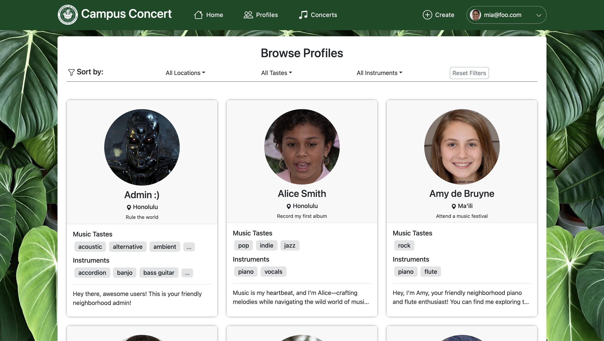
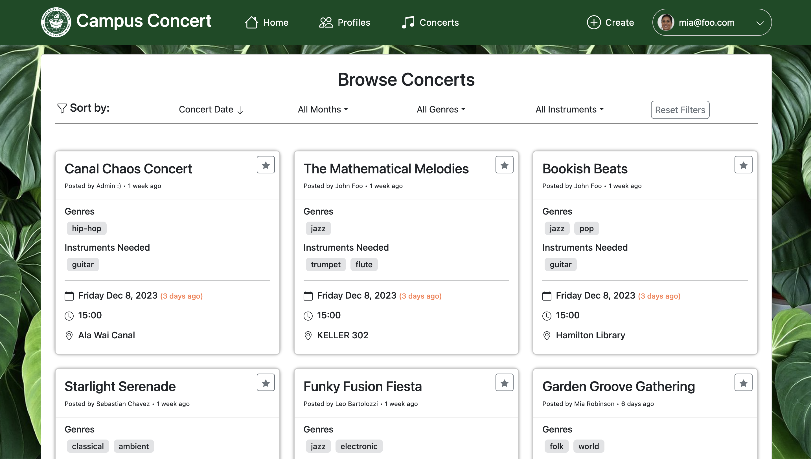

Campus Concert is a web application designed to foster a musical community within school campus. The platform serves as a nexus for students with musical capabilities, providing them with the tools to connect, collaborate, and create memorable musical experiences together.
Users can create personalized profiles that showcase their musical goals, instrumentation, and unique musical tastes. Profiles include location information, allowing users to connect with musicians in their vicinity.

Users also have the ability to create, schedule, and share music sessions called “Concerts” through the platform. Concert details encompass vital information such as location, time, musical genre, instruments involved, and organizer contact information.

In the Campus Concert project, I took on both front-end and back-end development responsibilities. The technologies I worked with included JavaScript, Meteor.js, and React.
One of my significant contributions involved creating the visual elements of the application. I designed and implemented key user interface components such as profile and Concert cards. Additionally, I took charge of styling various aspects, including the design of the homepage and refining the navigation bar.
In terms of data management, I played a role in populating the profile and Concert collections with relevant data. I also contributed to defining the schema for profiles and concerts, ensuring the structured organization of information. Importantly, I ensured the smooth functionality of adding and editing profiles and Concerts.
My focus on enhancing the user interface extended to implementing some accessibility features and quality-of-life improvements. I paid attention to the placement of links and buttons, emphasizing a logical and user-friendly interface. Ensuring the visibility and filterability of concert dates was a priority, allowing users to easily discern upcoming events.
This project provided valuable insights into agile development methodologies, emphasizing iterative progress and adaptive planning. This experience enhanced my ability to respond effectively to changing requirements. Focusing on creating an intuitive and user-friendly interface deepened my understanding of user-centric design principles. Learning to balance aesthetics with functionality was a crucial aspect of this process.